UndergroundStreets
Eight malls linked beneath Nagoya Station and Sakae — ESCA, Fashion One, Gate Walk, Dainard, Unimall, Sun Road, Miyako Underground Street and Kitachika, all mapped.
Overview
All eight malls, one map of the Nagoya Station (Meieki) underground network.
ESCA · Fashion One · Gate Walk · Dainard · Unimall · Sun Road · Miyako · Kitachika · north up · swipe to see the whole network
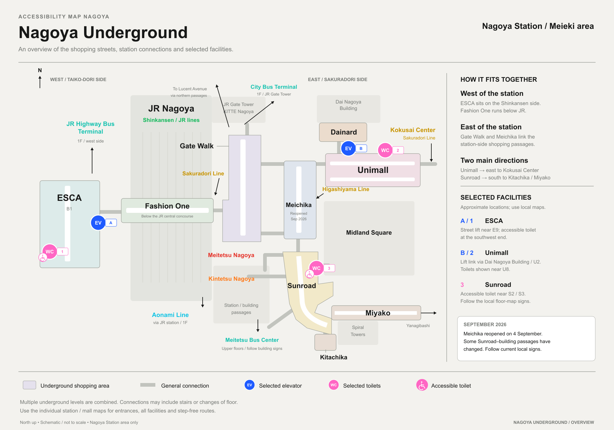
Simplified overview, not the official floor plan — outlines and distances are simplified, and grey connectors show broad building or station links rather than surveyed step-free routes. All eight malls — ESCA, Fashion One, Gate Walk, Dainard, Unimall, Sun Road, Miyako Underground Street and Kitachika — are now mapped in full below. Sourced from each mall’s official floor guide and access pages, cross-checked 13 September 2026.
ESCA
Elevators, toilets and coin lockers.
Elevators
The only lift up to street level is beside stair E9, on the station side — it runs between the B1 mall and the 1F street entrance toward JR Nagoya Station’s Taiko-dori/Shinkansen side. Two more lifts, near E2 and E6, only reach B2 parking, not the street.
Sourced from ESCA’s official floor guide. E1–E17 are ESCA’s own stair labels; not every stair is confirmed to reach street level.
Elevator in the ESCA mall · swipe for both angles
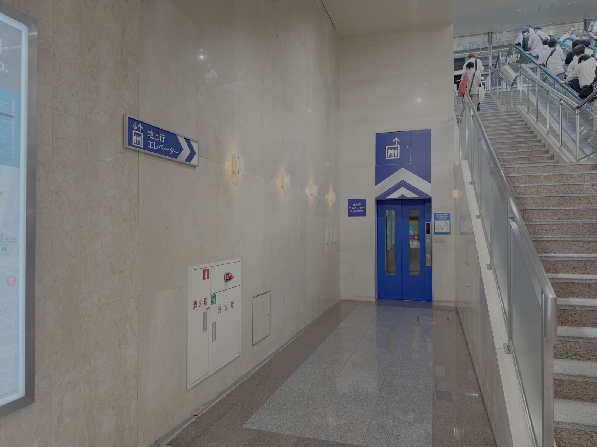
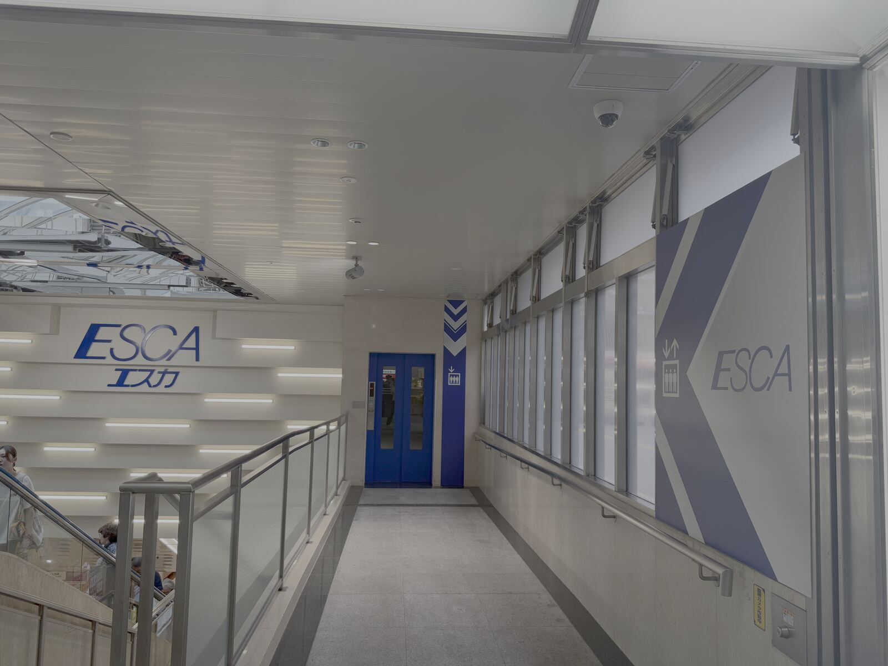
Toilets
The southwest toilets, near E1–E2, have a multipurpose accessible toilet alongside the men’s and women’s rooms. The northwest toilets, near E7, have a baby-changing bed but are not marked accessible on the official map.
Personally checked, 17 Sep 2026: ESCA has toilets beyond these two groups as well, further underground on B2 — reached only by stairs, not step-free. Across all of ESCA, only the southwest toilet (near E1–E2) is wheelchair-accessible.
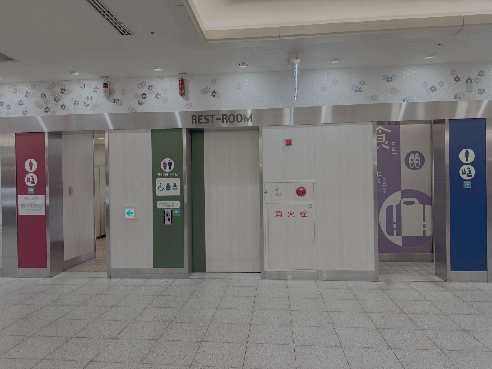
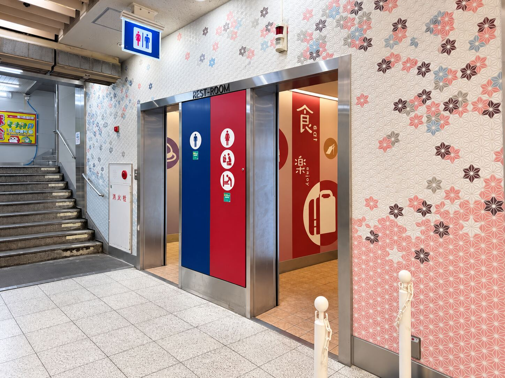
Coin lockers
Lockers are reported in the connecting passage on the left, just after coming down the stairs or escalator from the JR Taiko-dori exit into ESCA — near stair E9, close to the street-level lift.
From a third-party locker-finder site, not ESCA’s own floor guide — treat the exact spot as approximate.
Floor map
Coin lockers are not marked on this map — see Coin lockers above (connecting passage near stair E9).
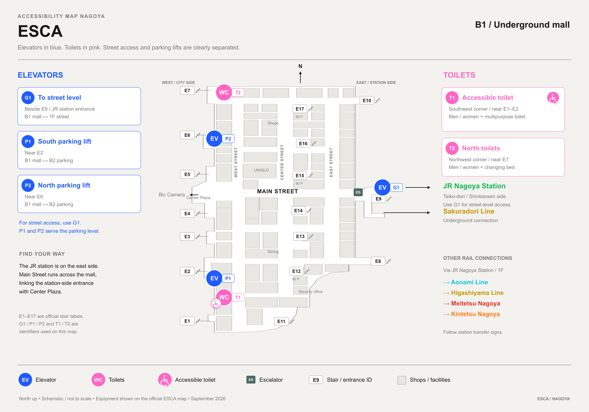
Simplified schematic, not the official floor plan — positions are approximate. G1/P1/P2 and T1/T2 are this map’s own IDs; E1–E17 are ESCA’s official stair labels. Only the southwest toilet (T1) carries an accessible-toilet symbol on the official map.
On the map
ESCA on Google Maps.
Fashion One
Elevators, toilets and coin lockers.
Elevators
One elevator connects 1F JR concourse, B1 Fashion One and the B2 subway concourse — confirmed by the city’s official step-free route text for the Sakuradori west-gate elevator.
Sourced from Fashion One’s official floor guide, cross-checked against Nagoya City Transportation Bureau’s text directions.
Toilets
Men’s and women’s toilets are beside the elevator. No accessible-toilet designation could be verified on the official floor guide.
Coin lockers
Luggage lockers are marked on Fashion One’s own official floor guide. A separate locker bank (No. 12) sits in the Sakuradori basement, beyond the shop plan; and locker bank B is on the adjoining west approach (IC-card payment only), with bank C downstairs from it.
Bank B sourced from the official Sakuradori locker-bank B page and its access diagram; No. 12 from the station’s own locker guide.
Floor map
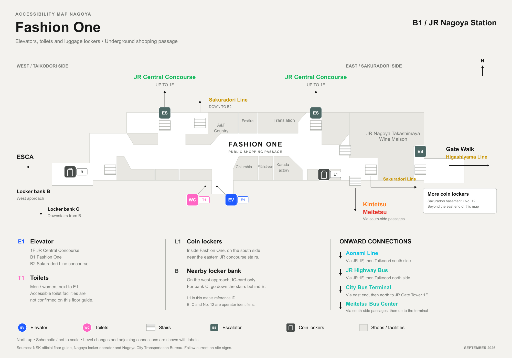
Simplified schematic, not the official floor plan — positions are approximate. E1, T1 and L1 are this map’s own reference labels; B and No. 12 belong to their respective locker operators. No accessible-toilet symbol is asserted. Sourced from Fashion One’s official floor guide and floor image, the station’s locker guide, locker bank B’s page, and the city’s step-free route text, cross-checked 12 September 2026.
On the map
Fashion One on Google Maps.
Gate Walk
Elevators, toilets and coin lockers.
Elevators
Three wheelchair-accessible elevators are marked on Gate Walk’s official digital floor map: at the north junction beside the Gate Tower approach, beside the subway central-gate area, and on the PRONTO / Gate Tower side.
Each marker was clicked on the official digital map and explicitly identified as a wheelchair-accessible elevator. Served floors and whether ticket-gate passage is required are not inferred from the icon alone.
Toilets
Gate Walk’s own floor map and toilet filter did not show a mall toilet location. The nearest known toilets are in the subway concourse to the east, reached via the public passage from the Higashiyama Line north/central gates.
This does not mean Gate Walk has no toilets, only that none was found on the official sources checked — ask on-site staff for the nearest one.
Coin lockers
A confirmed coin-locker bank sits on B1, north of the AMANO storefront, beside the stair junction.
Sourced directly from Gate Walk’s current official digital floor map.
Floor map
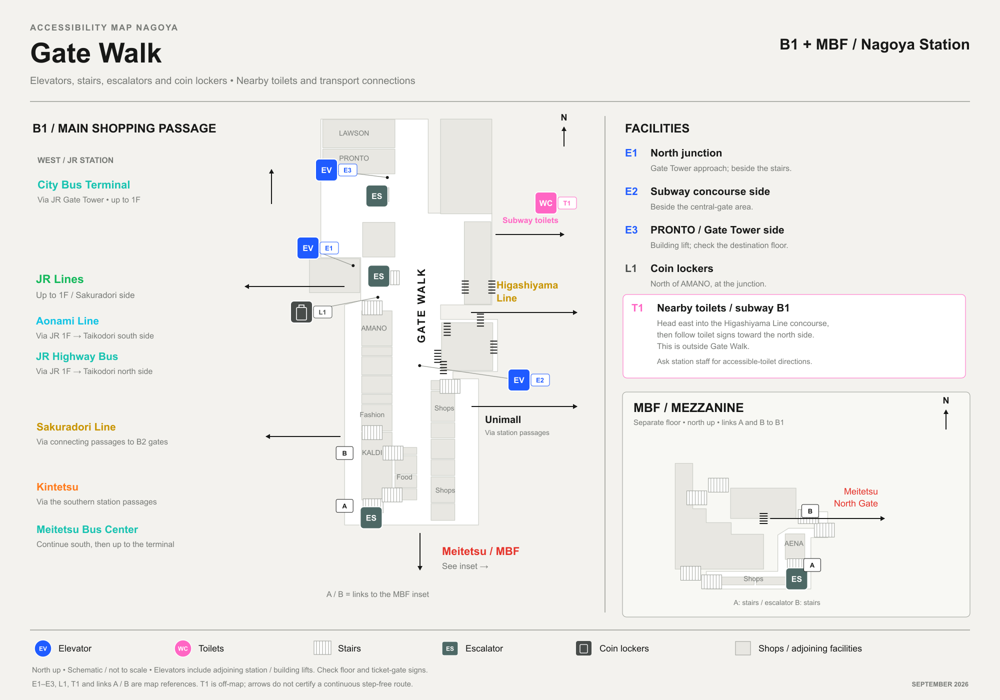
Simplified schematic, not a surveyed plan or certified step-free routing diagram. The B1 panel and the detached MBF panel are deliberately separated; A and B mark the level connections between them. E1–E3, L1 and T1 are this map’s own reference labels. Sourced from Gate Walk’s official floor-map page and current digital map, the Gate Tower access guide, and the city’s station text directions, cross-checked 12 September 2026.
On the map
Gate Walk on Google Maps.
Dainard
Elevators, toilets and coin lockers.
Elevators
Four elevators serve the connected Dai Nagoya Building basement: a northwest lift between B1 and 3F, a parking/retail lift between B2 and 5F, an office-approach lift between B1 and 1F, and a Unimall-side exit lift between B1 and 1F — the building’s access page confirms this last one connects through to Unimall’s U2 approach.
Sourced from the official B1 floor guide and floor image, cross-checked against the building’s access page and Unimall’s facilities page.
Toilets
One toilet group at the north end, beside FamilyMart and CHARLIE’S: men’s, women’s, an accessible/all-user toilet and diaper-changing facilities.
Confirmed by the building’s official FAQ.
Coin lockers
None inside Dai Nagoya Building — confirmed by the building’s own FAQ. The nearest option is at Nagoya subway station, Higashiyama Line North Gate, locker bank J; reach it via the Dainard passage.
Building answer from the official FAQ; nearby locker bank from the Nagoya subway locker guide.
Floor map
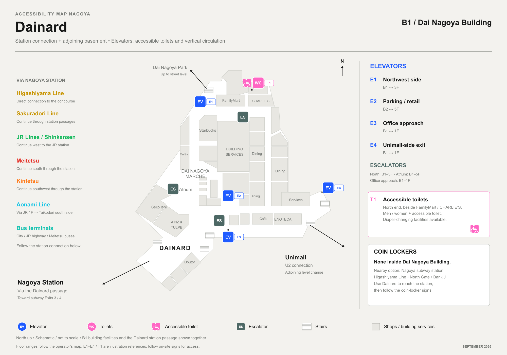
Simplified schematic, not the official floor plan — positions are approximate and the enlarged market inset on the source map is not drawn as extra space. E1–E4 and T1 are this map’s own reference labels; floor ranges are those printed by the building operator. Sourced from the official B1 floor guide and floor image, the building’s FAQ and access pages, Unimall’s facilities page, and the Nagoya subway locker guide, cross-checked 13 September 2026.
On the map
Dainard on Google Maps.
Unimall
Elevators, toilets and coin lockers.
Elevators
Three lifts change levels along the mall: E1 at West Plaza (opposite LUSH, toward the MB/GODIVA side), E2 at U2 linking to the Dai Nagoya Building’s B1, and E3 at U3 linking to the Nagoya Building’s B1 sunken garden. None of these is a single direct lift straight up to the street — they connect Unimall to an adjoining building’s basement instead.
For the station-front and Kokusai Center street elevators, follow on-site signs from the ticket-gate side; Unimall’s official guide also lists a route via the Nagoya Sanko Building near U14. Sourced from Unimall’s official floor guide and accessibility page.
Toilets
Six toilet groups are spaced along the mall (near U1, U2, U6, U8, U9 and U13). The U2 group combines two separate alcoves, women to the west and men to the east; the U6 group includes baby-changing and child facilities.
The official floor map does not mark any of these with an accessible-toilet symbol — none is asserted here either. Confirm on-site.
Personally checked, 17 Sep 2026: every toilet group in Unimall is reached by stairs — none of them is step-free.
Coin lockers
No coin lockers were found inside Unimall itself, on the official floor guide or facilities page. The nearest confirmed lockers are just outside the mall, at Nagoya Station’s subway concourse — Higashiyama Line, North Gate, locker area J.
This does not confirm there are no lockers inside Unimall, only that none was found on official sources. Nearby-locker location from the Nagoya Transport Development Organization’s locker guide.
Floor map
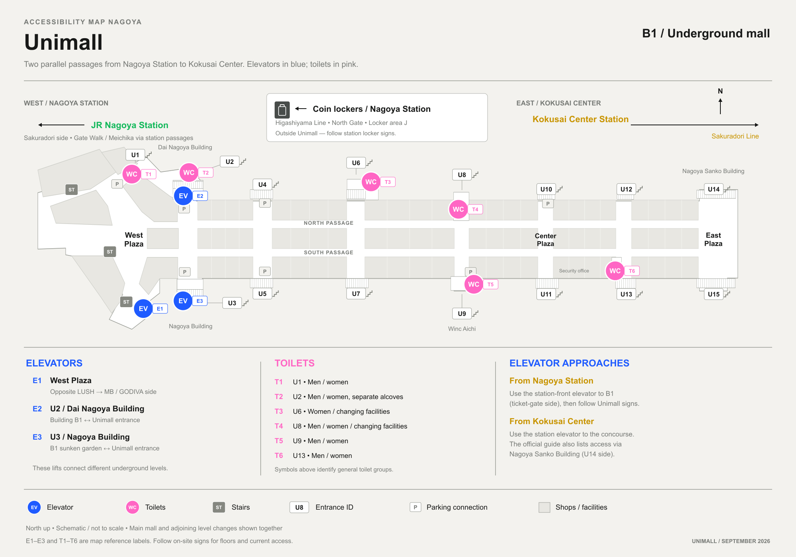
Simplified schematic, not the official floor plan — positions are approximate. E1–E3 and T1–T6 are this map’s own reference labels; U1–U15 are Unimall’s official entrance IDs. No wheelchair-accessible toilet symbol is shown on the official map, and no escalator is invented where only stairs are shown. Sourced from Unimall’s official floor guide, floor image and accessibility page, cross-checked with a station walking guide, 12 September 2026.
On the map
Unimall on Google Maps.
Sun Road
Seven street exits, one toilet group, and nearby Midland Square elevators.
Elevators & escalators
Sun Road’s own floor guide identifies no elevator or escalator inside its footprint. The adjoining Midland Square offers a step-free option instead: Elevator B (B1–1F, west side street elevator) and Elevator A (B3–5F, retail atrium), plus escalators at the retail atrium and office-side hall — shown here as directional guidance only, not as equipment confirmed inside Sun Road.
Sourced from Sun Road’s own floor guide (no elevator or escalator shown) and Midland Square’s elevator guide and B1 equipment diagram; exact Midland circulation beyond that guidance is outside this map’s footprint.
Toilets
One toilet group inside Sun Road, in the central block — men, women and a barrier-free toilet.
Sourced from Sun Road’s own floor map and information page.
Toilet entrance in Sun Road, with the mall’s mole mascot · swipe for more angles
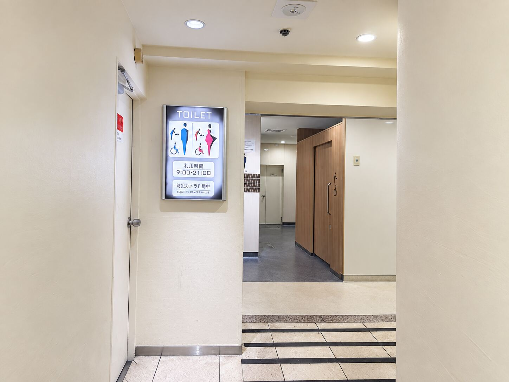
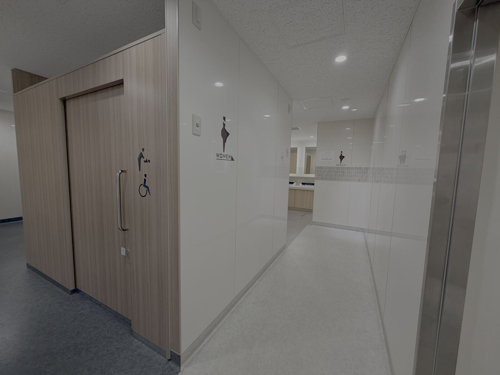
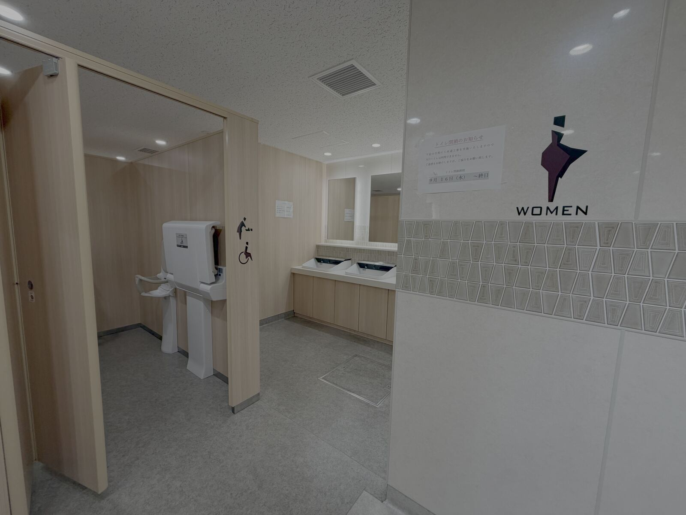
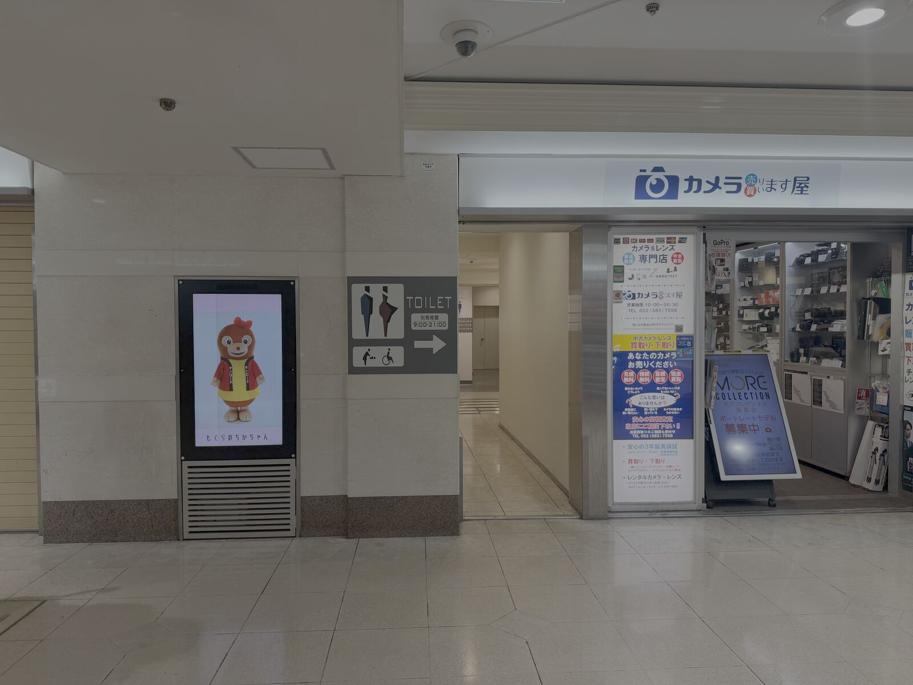
Coin lockers
None confirmed inside Sun Road. The nearest is Nagoya subway station, Higashiyama Line South Gate, locker bank H, in the vending-machine corner toward the Sun Road entrance.
Sun Road’s own materials neither confirm nor rule out on-site lockers; nearby bank from the Nagoya subway locker guide.
Floor map
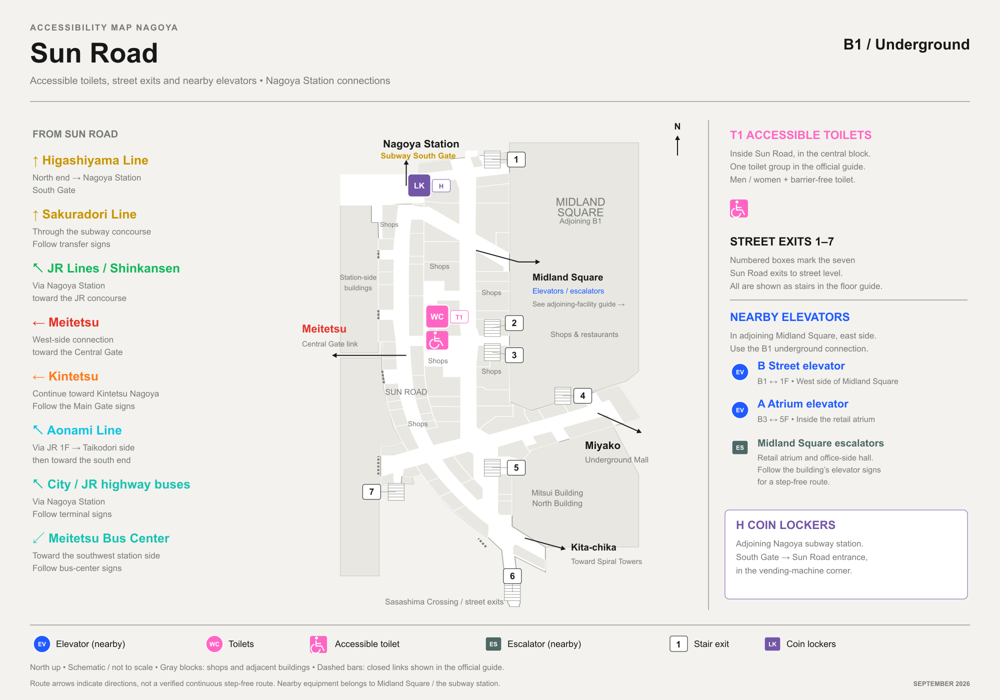
Simplified schematic, not the official floor plan — the official diagram has the station end on the right and is rotated counterclockwise to north-up here, using the area map’s geographic relationships; geometry is not survey-accurate. Dashed bars preserve links marked closed in the official floor diagram. Sourced from Sun Road’s official floor map, information and access pages, its official area map, Midland Square’s elevator guide and B1 equipment diagram, and the Nagoya subway locker guide, cross-checked 13 September 2026.
On the map
Sun Road on Google Maps.
Miyako Underground Street & Kitachika
Two connected malls, shown together — elevators, toilets, coin lockers and baggage storage.
Elevators
No elevator is confirmed inside Miyako itself — all five official exits (1–5) reach street level by stairs only. The connected Kitachika (Nagoya Mitsui Building North Tower, B1) has two lifts instead: one beside its B1 hall, and one further south beside the Spiral Towers connection; one escalator group also runs between B1 and 1F near the hall.
Sourced from Miyako’s current floor-map image and Kitachika’s own photographed floor sign; current floor ranges for Kitachika were not independently verified — follow on-site signs.
Toilets
No accessible toilet is confirmed inside either mall. The nearest options are Enishio Meieki, 1F (reached via Miyako Exit 1 and its elevator hall) and Sun Road, B1, just north of Kitachika.
Documented by TOTO’s 2024 case study on Enishio Meieki and Sun Road’s own accessibility page; the exact internal route and access hours are not confirmed.
Personally checked, 15 Sep 2026: a toilet door marked with wheelchair, baby-seat and ostomate pictograms was found on site at Kitachika — see photo. We have not yet confirmed which exact route reaches it, so the official-source guidance above still applies until we can document the full path.
Accessible toilet door found at Kitachika · swipe for both angles
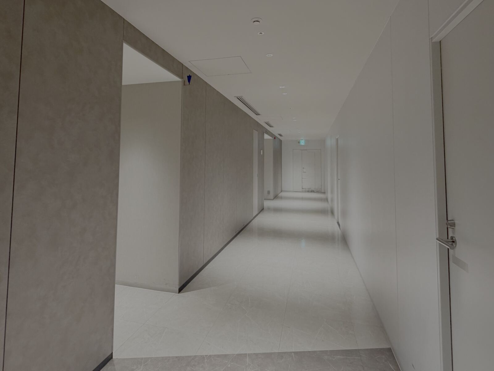
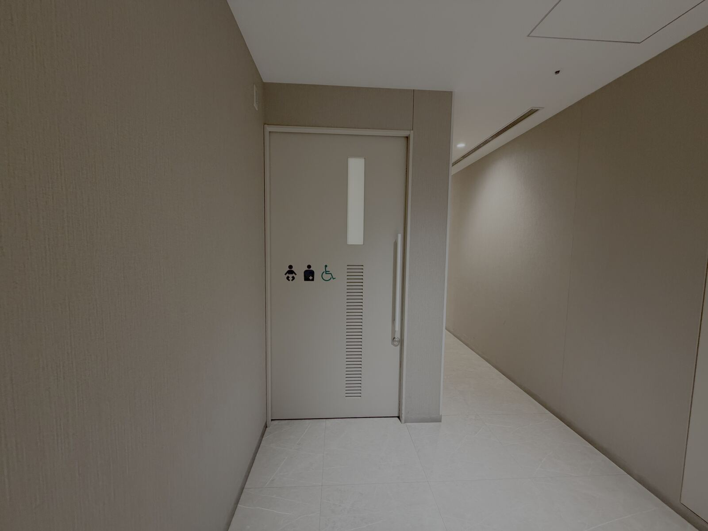
Coin lockers
None confirmed inside either mall. The nearest is Nagoya subway station, Higashiyama Line South Gate, locker bank H.
Neither mall’s own materials confirm or rule out on-site lockers; nearby bank from the Nagoya subway locker guide.
Baggage storage
A staffed Sagawa baggage storage and delivery counter sits at Miyako unit 02, near Exit 1 — a staffed counter, kept separate here from coin lockers.
Sourced from Sagawa’s own service-center page for Miyako.
Floor map
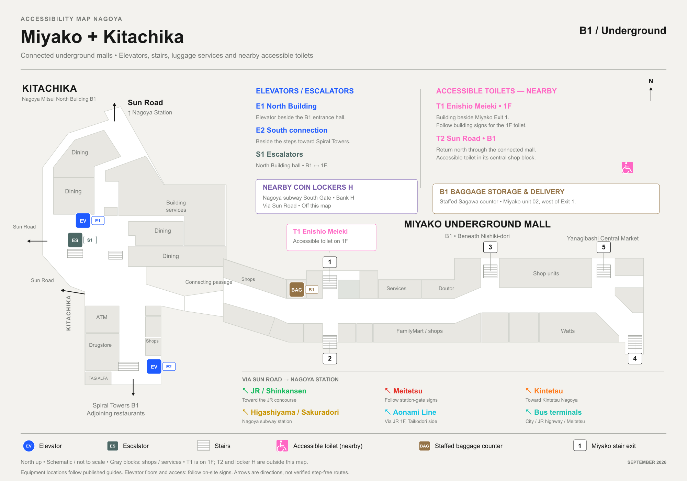
Simplified schematic, not the official floor plan — one combined illustration for Miyako Underground Street and the adjoining Kitachika (Nagoya Mitsui Building North Tower, B1). All five official Miyako exits are shown as stairs; no elevator inside Miyako was confirmed. Kitachika’s elevators, escalator and stairs come from the operator’s own photographed floor sign. Sourced from Miyako’s operator floor guide, Kitachika’s photographed facility guide and developer page, the Enishio Meieki accessible-toilet case study, Sun Road’s accessibility page and the Nagoya subway locker guide, cross-checked 13 September 2026.
On the map
Miyako Underground Street and Kitachika on Google Maps.